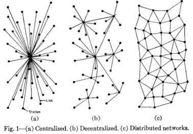
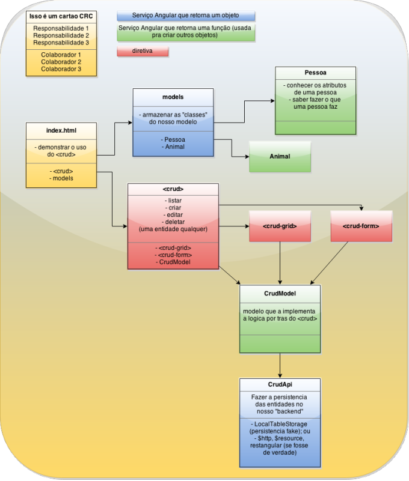
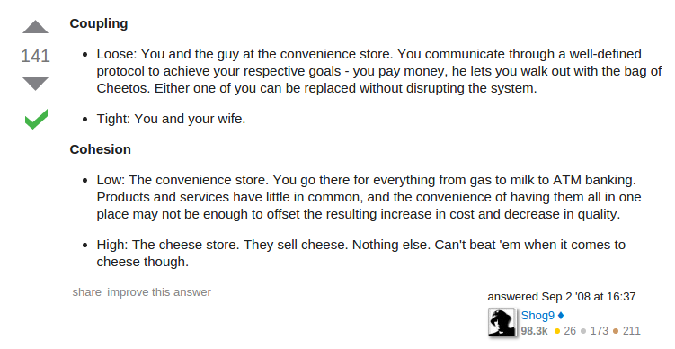
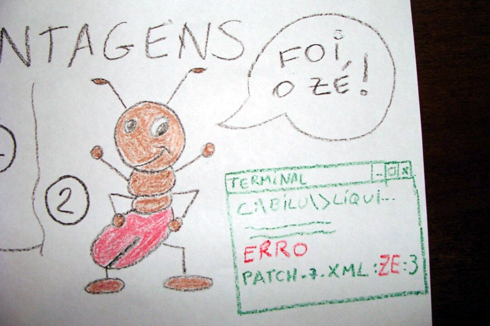
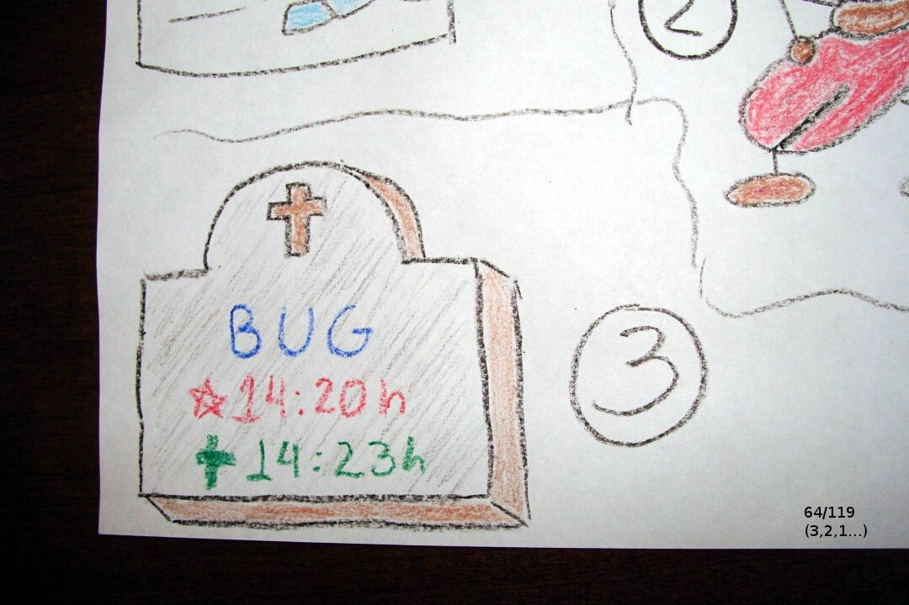
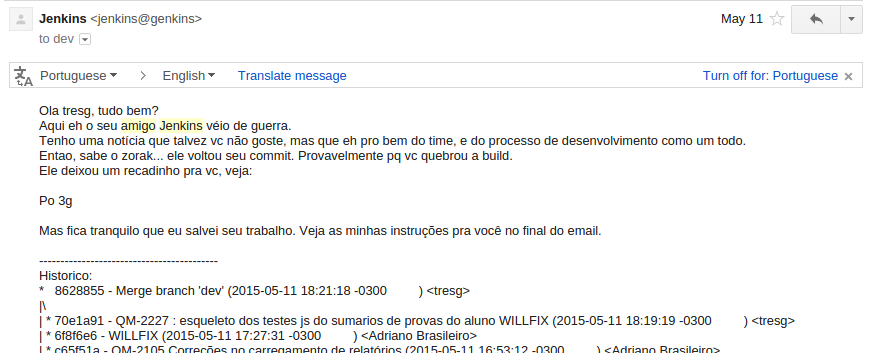
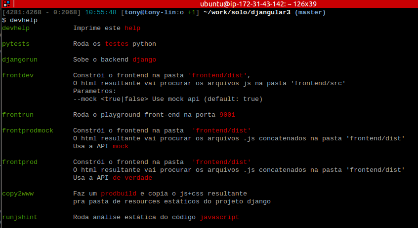
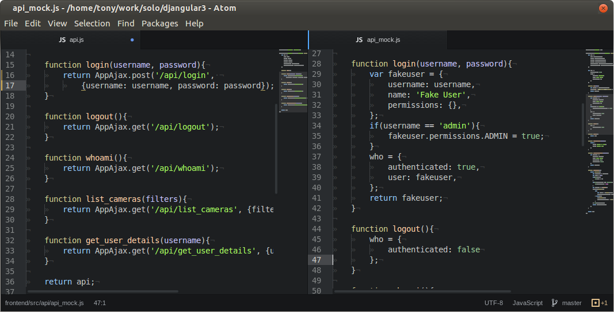
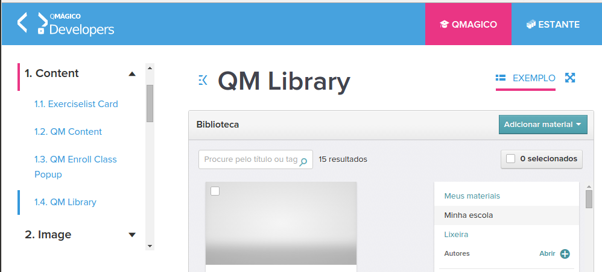

Ahh meus 20 e poucos!!
Dicas de arquitetura que eu gostaria de ter ouvido há 10 anos atrás.
 /tonylampada/ahhmeus20epoucos
/tonylampada/ahhmeus20epoucos
Tony Lâmpada, quem é vc?
O que a gente vai falar hoje?
- Design e arquitetura
- Processo de desenvolvimento
- Boas práticas + pra web
Tudo isso com uma visão geral, mas com links pra vc se aprofundar um pouco mais
1. Sobre Orientação a objeto, responsabilidades, e comida italiana [1]
Sobre Orientação a objeto, responsabilidades, e comida italiana
- OO é "melhor"... mas por quê?
- Ravioli vs. Spaghetti!
- E eu vi muito OO: herança, polimorfismo, classes. Tava tudo lá.
- E o spaghetti sempre achava um jeito de brotar aqui e ali!
- O tempo passa - e vc começa a pensar em termos de responsabilidades e conhecimento
- "Onde vai esse método?"; "Xi, fulano não devia conhecer cicrano..."
- Parece até uma empresa crescendo!
Sobre Orientação a objeto, responsabilidades, e comida italiana
- OO --> ravioli! #sqn
- Componente: um pedaço de software que tem uma(s) RESPONSABILIDADE(s)
- Componente: de preferência conhece alguns poucos componentes vizinhos
- Componente: pode ser quebrado em componentes menores
- É preciso organizar essa malha de modo a facilitar a comunicação entre esses componentes
Fazer software bem feito é a arte de ser CEO do sistema!
Comunique arquitetura com diagramas CRC
Um exemplo: extração de dados

Outro exemplo: [2] - Faça você mesmo - componente de CRUD com AngularJS
Não importa seu estilo
- "Meu filho, vc já viu o diagrama?"; ou
- "Rapaz eu tô enrolado, mas dá uma olhada lá, qq dúvida grita blz?"
A onda é ser preguiçoso
APIs importam
function CrudModel(model, options){
this.model = model;
this...
this.is_saving = false;
}
angular.extend(CrudModel.prototype, {
list: list,
create: create,
update: update,
remove: remove,
cancel: cancel,
});
function list(){
...
}E TDD é uma questão de planejamento!
Sobre coesão e acoplamento [3]
2. Processo bom erra rápido e corrige rápido [4]
 As 3 leis da build [5]
Como manter um ambiente de integração contínua são
1a. lei: Não comitarás em build quebrada.
Se vc quiser fazer um commit mas a branch está quebrada, vc deve providenciar que ela fique verde primeiro: Ou seja, ou vc conserta o que está quebrado, ou vai atrás da pessoa que quebrou pra ela consertar. Só depois que estiver verde, vc pode comitar suas alterações.
2a. lei: Se vc quebrar a build, vc tem 20 minutos pra consertar
Mesmo que pra isso vc preciso desfazer seu ultimo commit.
3a. lei: volte o commit de quem viola a 2a lei.
Vc pode até ser bonzinho e salvar o commit quebrado do cara numa branch.
Na pratica, isso aqui agora é muito raro
3. Web developer?
Conheça o Djangular3! [6]
O ambiente de desenvolvimento é importante!
Se eu tivesse 8 horas para cortar uma árvore, gastaria seis afiando meu machado - Abraham Lincoln
Clona e vai trabalhar!
AJAX? Faz um de mentirinha!
Tenha um catálogo de componentes
Ajax fake + catalogo de componentes = ...
- Ambiente de desenvolvimento simples e rápido pra front-enders
- Ambiente de prototipação/validação: errar barato!
- Desenvolva componentes isoladamente: "TPDD"!
- E ainda viabiliza testes unitários javascript
Web developer?
Tem mais algumas dicas legais lá no vídeo do Djangular3.
Sério. Vai dar uma olhada depois.